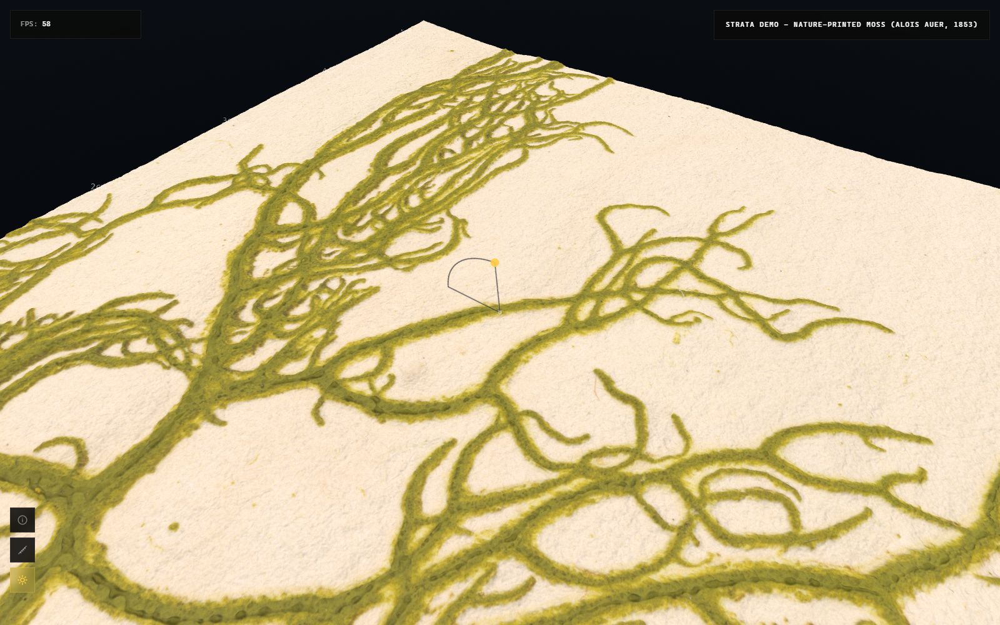
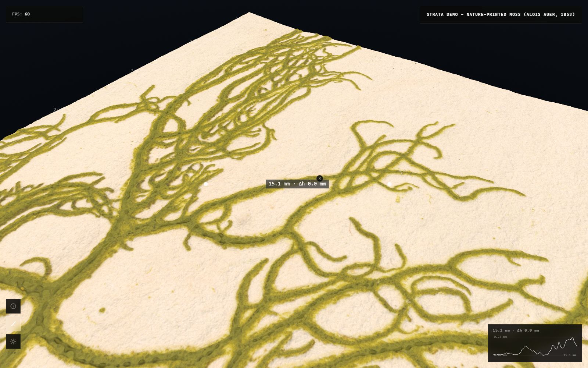
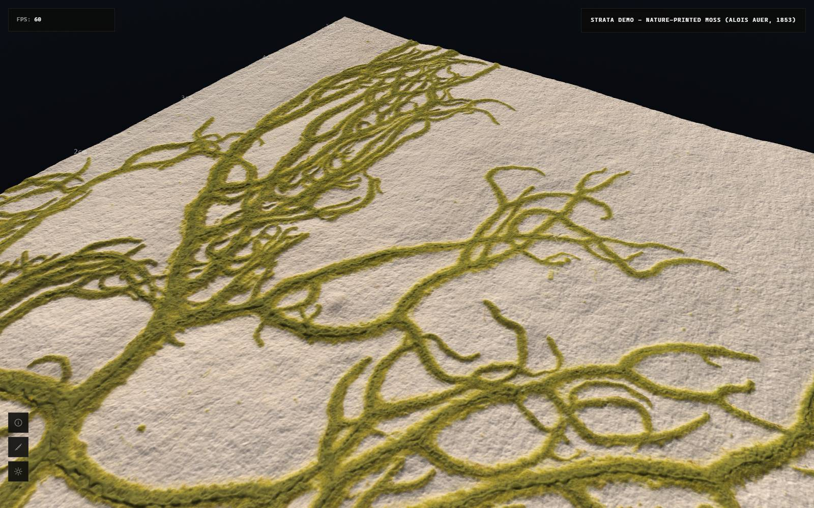
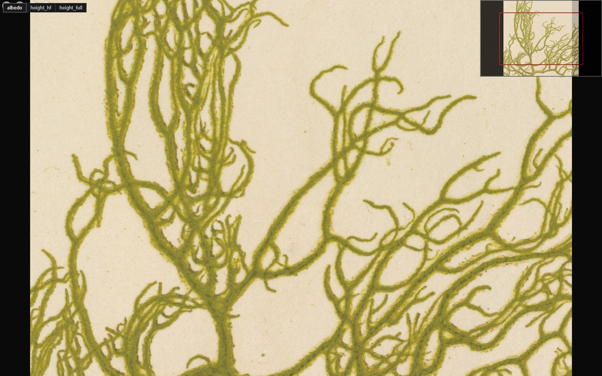

A scientific instrument for scanned surfaces
StrataViewer reads the output of photometric stereo, laser line scanning and photogrammetry, and turns it into a streamed 3D relief on any WebGL browser.

Relight
Move the light across the surface to read the relief, with real shadows.

Measure
Distances, height differences and elevation profiles, in real units from the scan.

Stream
A quadtree loads tiles at the right detail for the view, up to gigapixel scans.

Share as IIIF
Publishes and reads IIIF, so the same dataset opens in Mirador or OpenSeadragon.
What it accepts
| Format | Produced by | Notes |
|---|---|---|
| Depthmap TIFF | Selene PSS, laser line scanners, photogrammetry pipelines | Floating point, 32 or 64 bit, in metres. Converted with convert_scan.py. |
| Albedo TIFF | The same scan | 16 bit RGB. Becomes the colour layer. |
| Strata dataset | convert_scan.py, or written by hand |
A directory with dataset.json and 16 bit PNGs. The intermediate format. |
| TMS tile pyramid | generate_tiles.py |
256 px tiles plus metadata.json. This is what the viewer streams. |
| IIIF | generate_iiif_level0.py, generate_iiif_manifest.py |
Image API 3.0 level 0 tree and Presentation 3 manifest. The viewer can boot from a manifest URL. |
Running it
From a clone
git clone https://github.com/FactumFoundation/strata-viewer.git cd strata-viewer npm install uv sync uv run python scripts/generate_tiles.py npm run dev
Boot the viewer in your own page
import { QuadTree } from './src/QuadTree.js';
import { StrataRenderer } from './src/StrataRenderer.js';
const metadata = await fetch('./moss/metadata.json').then(r => r.json());
const quadTree = new QuadTree({ maxLevel: metadata.maxLevel });
const terrain = new StrataRenderer(scene, metadata, { tileBaseUrl: './moss/' });
For research use
If StrataViewer is part of your documentation or research workflow, please cite it.
BibTeX
@software{cano_strataviewer_2026,
author = {Cano, Jorge},
title = {StrataViewer},
year = {2026},
url = {https://github.com/FactumFoundation/strata-viewer},
doi = {10.5281/zenodo.21614286}
}